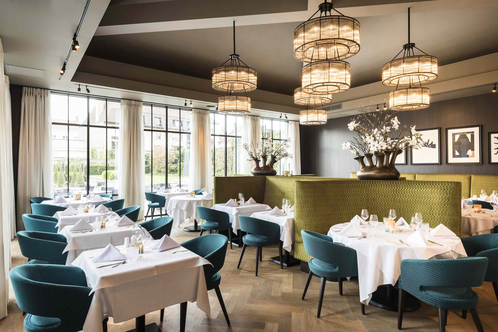

.
Restaurant ARAZ
Dans ce restaurant dégustez la fameuse poêlée du bûcheron, elle est préparée chaque jour par nos équipes et est servie sur assiette ou en sandwich.
En dessert, vous pourrez découvrir la glace canadienne qui régale petits et grands.
Le restaurant ARAZ est un self avec terrasse et salle couverte.
Bar-@-ThéO
Choisissez de déguster une délicieuse pâtisserie faite maison, préparée avec soin par notre pâtissier,
accompagnée d'un thé ou d'une boisson fraîche.
Accordez-vous un réel moment de détente
après les attractions, et offrez-vous une limonade fraîche, à savourer sur notre terrasse ensoleillée.

.

.
La Taverne
Entrez dans cette taverne et découvrez toutes les spécialités :
le jambon braisé avec sa sauce aux poivres, le fameux poulet rôti, les bretzels salés ou gratinés, les salades et sandwichs végétariens….
Une farandole de desserts attend les plus gourmands.
Self avec salle climatisée de 350 places et terrasse.
Pizzeria
Nos pizzas sont préparées à la demande et faites maison.
4 variétés de pizzas à déguster sans modération. Vous pouvez également emporter une pizza en fin de journée.
Nous servons également des hot-dog et des frites.
Pizzeria avec terrasse.

.
.
Le Grill
Situé à proximité de l’entrée du parc, le Grill vous propose de découvrir ses grillades avec notamment la très populaire andouillette AAAAA de Troyes.
D’autres spécialités très variées comme des salades : végétarienne, saumon, caesar…
Self avec terrasse.

.
.
.
.